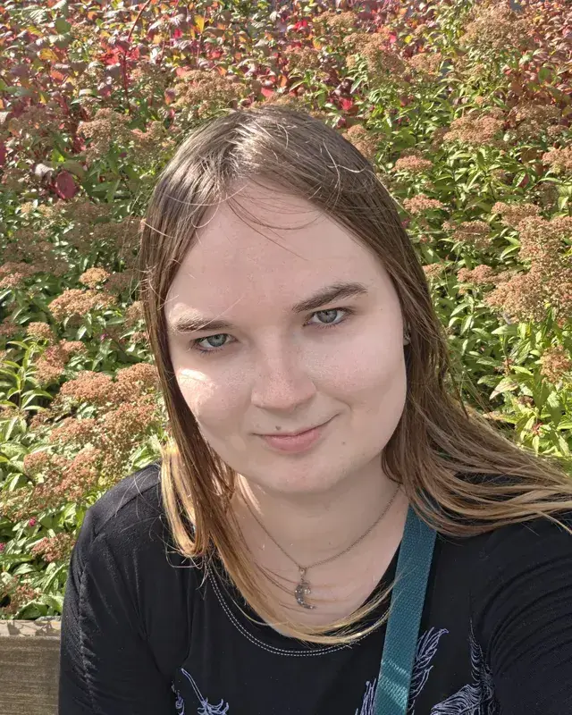
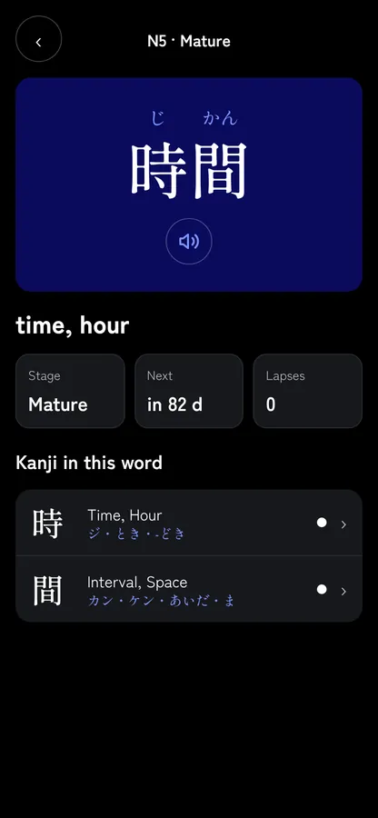
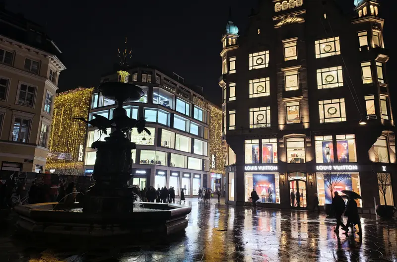
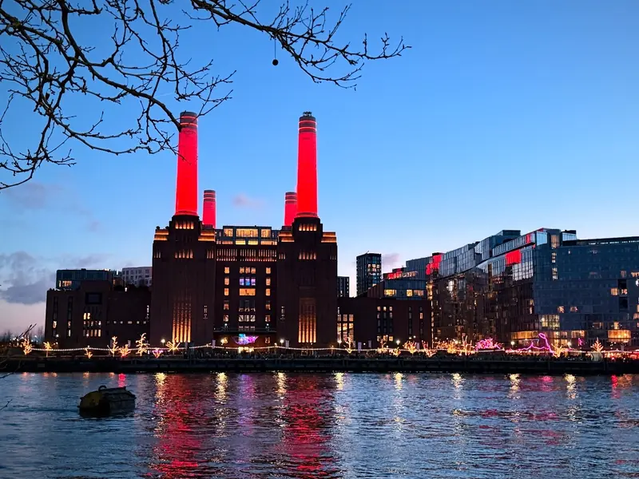
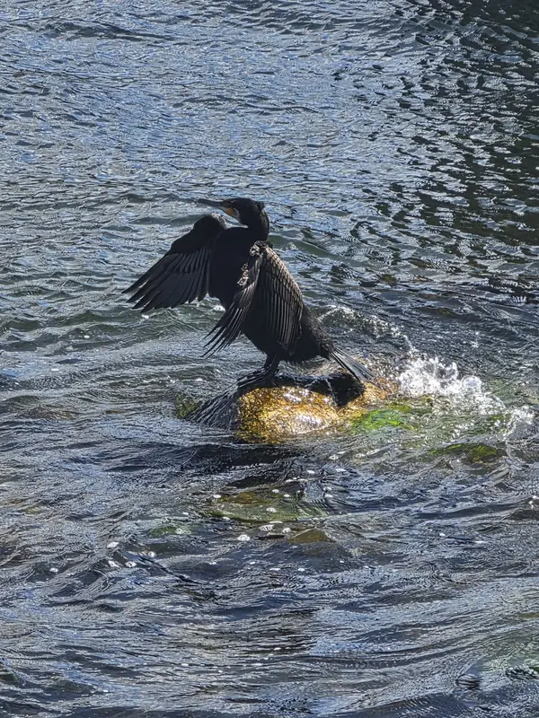

Jeg er senior security engineer i Novonesis’ Cyber Defence Centre. Før det lavede jeg incident response hos Microsoft DART og detection engineering hos det britiske finanstilsyn. Om aftenen bygger jeg apps, spiller, ser anime og fotograferer København.

Fysiker af uddannelse, incident responder af temperament.
Opvokset i England, uddannet i fysik fra University of Leicester og flyttet til København i 2025. Taler engelsk, dansk, japansk og fransk, i den rækkefølge og med faldende selvtillid.

En app, der lærer dig at læse japansk: kanji i rigtige ord, med spaced repetition. Offline, uden konti og uden trackere.
Træning til indfødsretsprøven, som holdes ajour, når spørgsmålene skifter. Næste skridt: et sprogspor med en/et, på/i og stød.
$ python3 verify.py .All images are clean.0 trackers · 0 cookies
Den her side. Statisk og uden trackere, med en pipeline, der fjerner metadata fra hvert foto, og en CI-test, der fejler, hvis noget slipper igennem.



Der er ingen kontaktformular, så der er intet at spamme eller hacke. Skriv bare en mail.
lena@lenagibson.eu